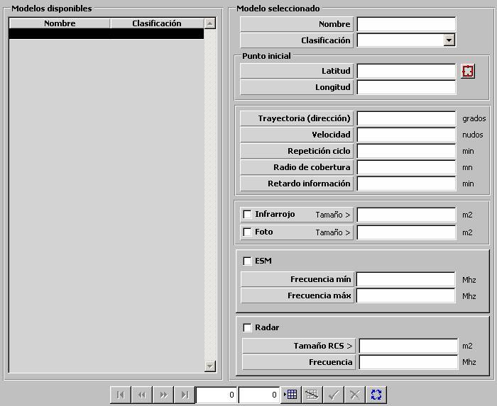

Satélite

Descripción de los parámetros:
Punto Inicial: Este parámetro determina el punto inicial de la trayectoria del satélite. El movimiento del satélite se modela considerando que inicialmente se encuentra en este punto, que se mueve siguiendo una trayectoria según la Dirección y Velocidad especificada, y que una vez transcurrido el tiempo especificado en Repetición del Ciclo vuelve a este Punto Inicial.
Latitud: Latitud del punto inicial.
Unidades: grados y minutos con dos decimales, con el formato: 999º99.99'N/S
Rango: 000º00.00'N – 089º59.99'N, 000º00.00'S – 089º59.99'S
Longitud: Longitud del punto inicial.
Unidades: grados y minutos con dos decimales, con el formato: 999º99.99'N/S
Rango: 000º00.00'E – 179º59.99'E, 000º00.00'W – 179º59.99'W
Trayectoria:
Dirección: Este parámetro determina la dirección de la trayectoria que sigue el satélite.
Unidades: grados
Rango: 0 - 360
Velocidad: Este parámetro determina la velocidad de la trayectoria que sigue el satélite.
Unidades: nudos
Rango: 0 - 999
Repetición del Ciclo: Este parámetro determina el tiempo que tarda el satélite el repetir su ciclo de movimiento. Una vez transcurrido este tiempo, se considera que el satélite vuelve a su posición inicial.
Unidades: minutos
Rango: 0 - 9999
Radio de Cobertura: Este parámetro determina el radio del área de cobertura del satélite. La detección de móviles por el satélite se realizará sobre aquellos móviles que están dentro de la circunferencia formada por la posición del satélite según su trayectoria, y este radio de cobertura.
Unidades: Millas
Rango: 0 - 999
Retardo en la Información: Este parámetro determina el retardo con el que la información del satélite es recibida por los equipos receptores satélite. Es tenido en cuenta como la periodicidad con la que el modelo de satélite es evaluado.
Unidades: minutos
Rango: 0 - 999
Infrarrojo: Este parámetro determina si el satélite tiene capacidad de detección de móviles por Infrarrojo. Si es así, el satélite detectará aquellos móviles dentro del área de cobertura cuyo tamaño infrarrojo sea mayor o igual que el tamaño infrarrojo mínimo de detección especificado en el siguiente campo.
Tamaño >: Tamaño infrarrojo mínimo de detección del satélite. Sólo podrá ser introducido si el satélite tiene capacidad Infrarrojo.
Unidades: m2
Rango: 0 - 99999
Foto: Este parámetro determina si el satélite tiene capacidad de detección de móviles por Visual. Si es así, el satélite detectará aquellos móviles dentro del área de cobertura cuyo tamaño visual sea mayor o igual que el tamaño visual mínimo de detección especificado en el siguiente campo.
Tamaño >: Tamaño visual mínimo de detección del satélite. Sólo podrá ser introducido si el satélite tiene capacidad Foto.
Unidades: m2
Rango: 0 - 99999
ESM: Este parámetro determina si el satélite tiene capacidad de detección de móviles por ESM. Si es así, el satélite detectará aquellos móviles dentro del área de cobertura cuyos radares y / o ECM estén en funcionamiento a una frecuencia que se encuentre dentro de los límites establecidos por frecuencia mínima y frecuencia máxima especificadas en los siguientes campos (incluyendo los valores extremos del intervalo).
Frecuencia Mínima: Frecuencia mínima de detección de satélite por ESM. Sólo podrá ser introducido si el satélite tiene capacidad ESM.
Unidades: MHz
Rango: 0 - 99999
Frecuencia Máxima: Frecuencia máxima de detección de satélite por ESM. Sólo podrá ser introducido si el satélite tiene capacidad ESM.
Unidades: MHz
Rango: 0 - 99999
Radar: Este parámetro determina si el satélite tiene capacidad de detección de móviles por Radar. Si es así, el satélite detectará aquellos móviles dentro del área de cobertura cuyo tamaño RCS sea mayor o igual que el tamaño RCS mínimo de detección especificado en el siguiente campo.
Tamaño RCS: Tamaño RCS mínimo de detección del satélite. Sólo podrá ser introducido si el satélite tiene capacidad Radar.
Unidades: m2
Rango: 0 - 99999
Frecuencia: Este parámetro determina la frecuencia de operación del modelo radar asociado al satélite. Es tenido en cuenta en el cálculo del tamaño RCS de los móviles. Sólo podrá ser introducido si el satélite tiene capacidad Radar.
Unidades: MHz
Rango: 0 - 99999